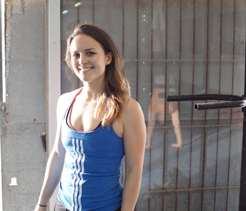

About Me | Qualifications

Welcome! I’m Jen Curtis, and I’m so happy that you've come to my website!
As well as being fully trained and qualified in pre- and postnatal fitness and pelvic floor rehabilitation, I have done endless courses and as well as mentorship under pelvic floor physios.
I am a certified personal trainer and Sport-therapist.
I am constantly learning - currently, I am working towards certification as a nutrition coach, and spend the rest of my time in private study learning about movement, the body, and issues with the core and pelvic floor, learning and brainstorming how to fix them.
I help mums and mums-to-be get incredibly STRONG and
I'm here to help you get back into or keep you training safely and effectively during your pregnancy or after giving birth.
I hope to demystify exercise during and after pregnancy and empower you to make choices that are right for you.
If you’ve found your way here, there is a good chance that you have a strong desire to be as fit and healthy during and after your pregnancy as possible. You may be looking to heal diastasis recti, or resolve pelvic floor issues, or you may just be looking to feel strong and fit and YOU in your body again.
Either way, you are likely totally confused about how to train during or after pregnancy.
In addition to the above, I'm a CrossFit Level 1 Trainer (I worked as a CrossFit coach for two years), and trained in pre- and postnatal fitness as well as core and Pelvic floor rehabilitation. I have extensive knowledge and personal experience in strength training, weightlifting, gymnastics, Brazilian Jiu Jitsu, Capoeira, yoga and lots of competitive sports.
Training Philosophy
Many people ask me what method I use, as most trainers are practitioners of a particular methodology. The answer is, "it depends" - it depends on you and where you're at on your journey, what your needs are and what issues you need to resolve. I have a large toolbox and draw from many different methodologies and approaches.
Strength training, CrossFit, Gymnastic Strength Training and movement-based methodologies have largely shaped much of my approach to fitness, but I still pull techniques from disciplines like yoga and Pilates. The longer you train, the more you see value in every training methodology, but perfection in none of them.
The mistake that many trainers make is trying to adapt the trainee to their chosen methodology, whereas the opposite should be true, A trainer must have many many tools in his or her toolbox to be able to produce an effective and safe training programme for any individual.
I see women with a range of issues: some have diastasis, some don't, some have pelvic floor dysfunction, others don't, some are incredibly weak or unfit, others aren't, some are hyper-flexible, and others are as stiff as a board. How can you use the same approach to treat and train all of these individuals? They all need something different, and there is no one-size-fits-all in fitness and wellness.